Bringing big data to the NICU
|
Canadian Neonatal Brain Platform Symposium 2017 Samir Das - Software Manager 


| |

What is Data Sharing?
Exchange of information
Datasets
Tools
Standardization
Databases
Collaborations
Conferences, hackathons
Facebook, Google, Twitter, etc.
Image source: http://blog.veritythink.com/post/87880448269/creative-data-sharing-and-open-humanitarianism
Data Sharing Considerations
| Benefits | Hurdles |
|---|---|
| Increased validation | Obtaining ethics |
| Reduces waste/duplication | Technical challenges |
| Increased exposure | Privacy concerns |
| Access to larger datasets | Data Harmonization |
| Access to rare data | Interoperability |
| Less attrition | Reproducibility |
| Saving Tax $$ | Public dataset not identical |
Privacy Concerns
| 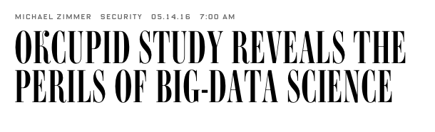 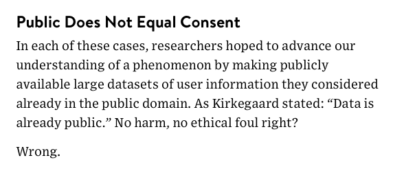 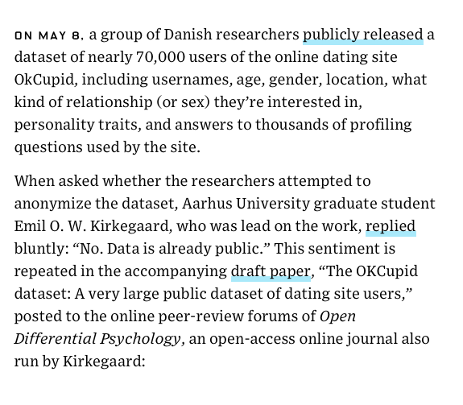 | 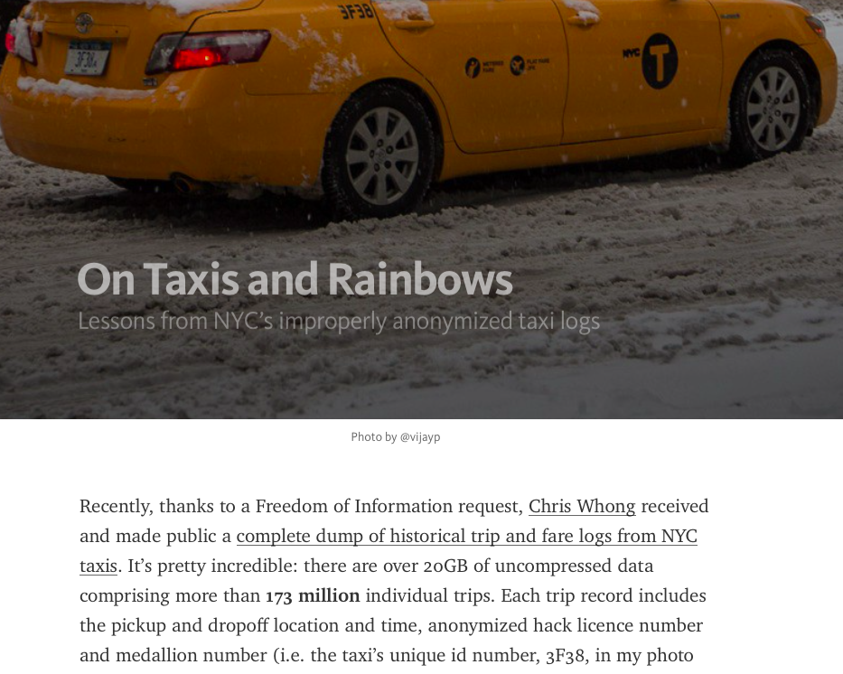 Adrian Thorogood BIC lecture - March 9, 2016 |
Best practices in Data Sharing

|

|
Some Data Sharing solutions?


|
Common Ontology for Imaging Data |
NeuroImaging Data Model
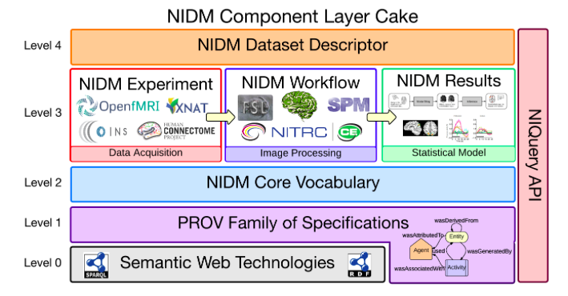Format for storing metadata, provenance, processing information

|
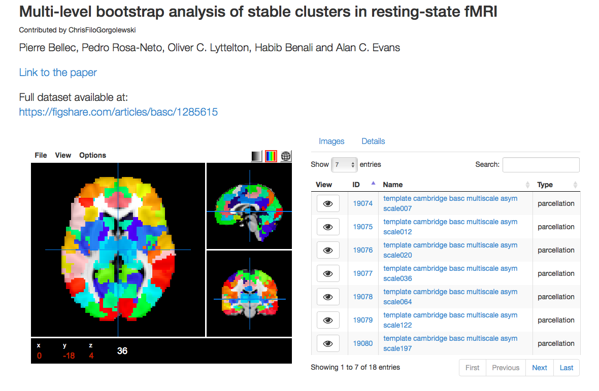 |
DataLad
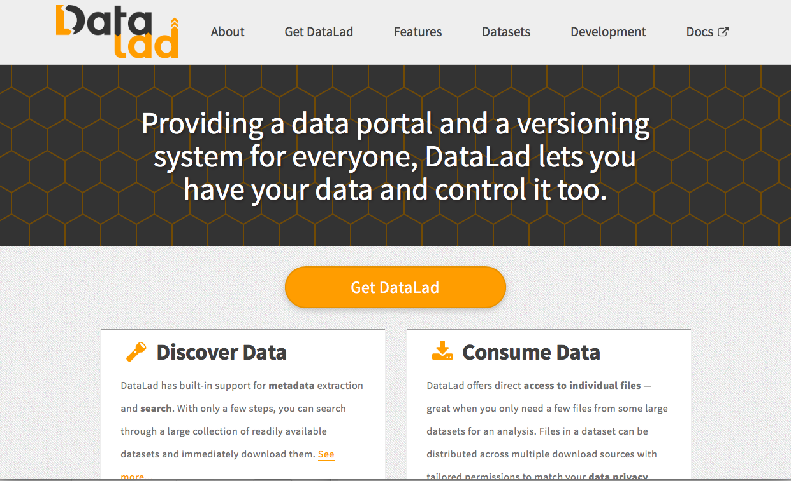
LORIS - CBRAIN Data Flow

LORIS - Key features
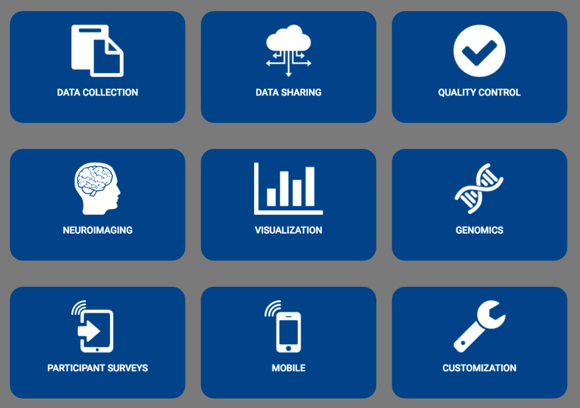LORIS Dashboard
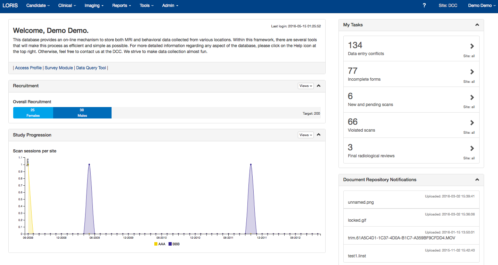LORIS globally

|

|
|


|

|
|
| 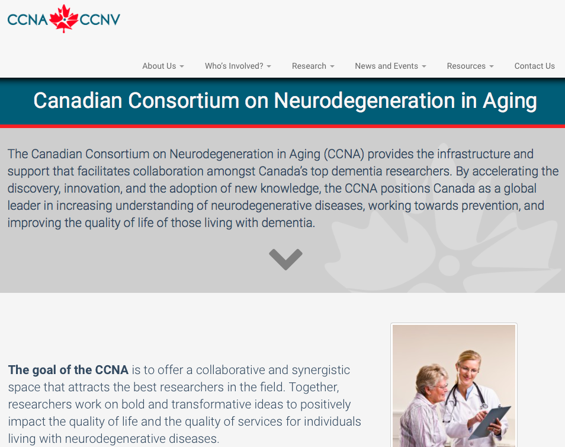 |
|

|

|
|
Several default tools:
|

|
CBRAIN projects

CBRAIN tasks


Open Science

|

|

Cyberinfrastructure

Cybersecurity
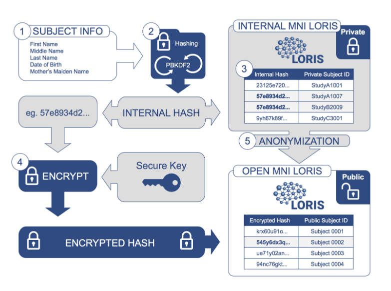

|
Thank you!Acknowledgements: Alan Evans, Alex Zijdenbos, Dario Vins, Jonathan Harlap, Matt Charlet, Andrew Corderey, Sebastian Muehlboeck, Reza Adalat, Louis Collins, Vladimir Fonov, Marc Rousseau, Mia Petkova, Rathi Gnanasekaran, David Brownlee, Tarek Sherif, Pierre Rioux, Nic Kassis, Leigh MacIntyre, Claude Lepage, Ilana Leppert, Natasha Beck, Tristan Glatard, Bert Vincent, Lindsay Lewis, Najma Mahani, Elodie Portales-Casamar, Alden Woodward, Sylvain Milot, Jean Francois Malouin, Sylvain Baillet, Daniel Kroetz, Martin Weiss, Mathieu Desrosier, Jason Karamchandani, Amit Bar-Or, Ted Fon, John Brietner, Derek Lo, Patrick Bermudez, Chris Steele, Pamela Patterson and one of my favourites: Pierre Bellec! LORIS team on left (special thanks to Christine Rogers for listening to me.) |